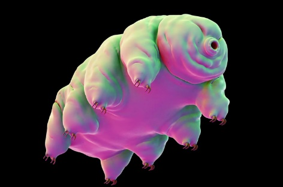

Kazuharu Arakawa medveállatka-kutató véletlenül fedezett fel egy új fajt; szabadidejében lement a tokiói albérleti lakása alatti parkolóba, és vett egy kis mintát a kövek között megbújó mohából, majd bevitte a laborba és később alaposan megvizsgálta. Belenézve a mikroszkópba tíz medveállatkát látott, amikről pedig genetikai elemzés során kiderült, hogy egy teljesen új faj egyedei. Ami még nagyobb öröm, hogy a példányok laboratóriumi körülmények között is szaporodni kezdtek, pedig ez nem jellemző. Továbbá nem szűznemzéssel kezdtek el sokasodni, mert hímekre is szükség volt a folyamat során. Japánban ez a százhatvannyolcadik felfedezett medveállatka faj, a neve Macrobiotus shonaicus lett.
Írta: Tihanyi Sára Zsófia
